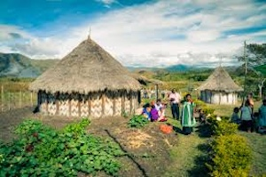
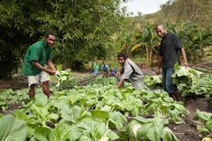
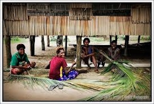

Everyday Activities
Daily life in Papua New Guinea varies significantly by region and culture. Most people live in villages and engage in subsistence farming, fishing, and hunting.
  Village Lifestyle
Village life in Papua New Guinea (PNG) is characterized by a close-knit community structure deeply rooted in cultural traditions and practices. Many villages are situated in remote, lush environments, where residents rely on subsistence farming and fishing for their livelihoods. Daily life revolves around familial ties and communal activities, with villagers often engaging in agricultural tasks, such as planting and harvesting crops like sweet potatoes, taro, and sago. Social gatherings and ceremonies, which may include traditional dances, feasting, and storytelling, play a vital role in reinforcing community bonds and preserving cultural heritage. Furthermore, village life is marked by a strong connection to land and nature, with many communities remaining deeply spiritual, believing in ancestral ties and the importance of maintaining a harmonious relationship with their environment. Overall, village life in PNG is a blend of tradition, community spirit, and resilience, reflecting the rich cultural tapestry of the nation.